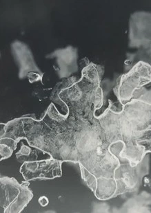

Helen Grove-White

Sgyrsiau am ynni niwclear, newid hinsawdd a’r anthroposen drwy waith arbrofol yn bennaf ar ffurf ffotograffiaeth neu lyfrau.
Conversations on nuclear power, climate change and the anthropocene through experimental work mainly in photographic media and book form.
01407 710769 / 07941 780479
hgrovewhite@gmail.com
www.helengrovewhite.co.uk
THE LAUNDRY STUDIO, BRYNDDU, LLANFECHELL, LL68 0RT
O Gaffi Mechell cymerwch ffordd Rhosgoch heibio’r garej. Cymerwch y troiad cyntaf ar y chwith ac wedyn yr ail droiad eto ar y chwith i’r rhodfa. Mae’r stiwdio ar y dde.
From the community café in Llanfechell take the Rhosgoch road out past the garage. Take first left and first left again into the drive. Fork right for the studio on your right.